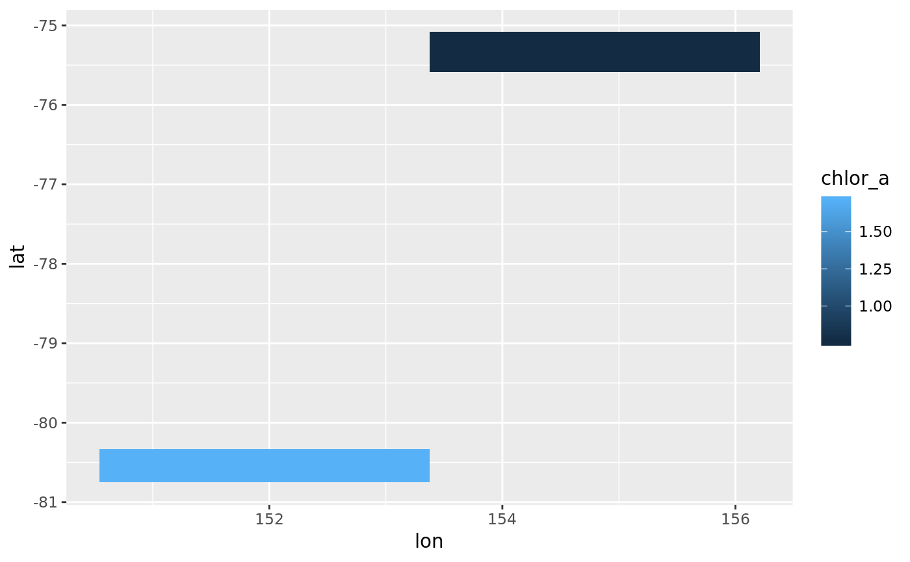

hyper tibble
hyper_tibble(x, ..., na.rm = TRUE) # S3 method for character hyper_tibble(x, ..., na.rm = TRUE) # S3 method for tidync hyper_tibble(x, ..., na.rm = TRUE)
| x | object to tibbulate |
|---|---|
| ... | arguments to `hyper_filter`` |
| na.rm | if |
a tbl_df
l3file <- "S20080012008031.L3m_MO_CHL_chlor_a_9km.nc" f <- system.file("extdata", "oceandata", l3file, package= "tidync") rnc <- tidync(f) hyper_filter(rnc)#> #> Data Source (1): S20080012008031.L3m_MO_CHL_chlor_a_9km.nc ... #> #> Grids (4) <dimension family> : <associated variables> #> #> [1] D1,D0 : chlor_a **ACTIVE GRID** ( 9331200 values per variable) #> [2] D3,D2 : palette #> [3] D0 : lat #> [4] D1 : lon #> #> Dimensions (4): #> #> dim id name length min max active start count dmin dmax #> <chr> <int> <chr> <dbl> <dbl> <dbl> <lgl> <int> <int> <dbl> <dbl> #> 1 D0 0 lat 2.16e³ - 90.0 90.0 TRUE 1 2160 - 90.0 90.0 #> 2 D1 1 lon 4.32e³ -180 180 TRUE 1 4320 -180 180 #> 3 D2 2 rgb 3.00e⁰ 1.00 3.00 FALSE 1 3 1.00 3.00 #> 4 D3 3 eightbit… 2.56e² 1.00 256 FALSE 1 256 1.00 256 #> # ... with 2 more variables: unlim <lgl>, coord_dim <lgl>library(dplyr)#> #>#> #> #>#> #> #>#> #> #>lapply(hyper_slice(f, lat = lat > 0, lon = index > 3000), dim)#> $chlor_a #> [1] 1320 1080 #>#> # A tibble: 11 x 3 #> chlor_a lon lat #> <dbl> <dbl> <dbl> #> 1 1.71 170 -76.0 #> 2 1.71 170 -76.0 #> 3 1.71 171 -76.0 #> 4 1.71 171 -76.0 #> 5 1.71 171 -76.0 #> 6 0.759 165 -77.4 #> 7 0.759 165 -77.4 #> 8 0.759 165 -77.4 #> 9 0.759 165 -77.4 #> 10 0.759 165 -77.4 #> 11 0.759 166 -77.4library(ggplot2)#> #>